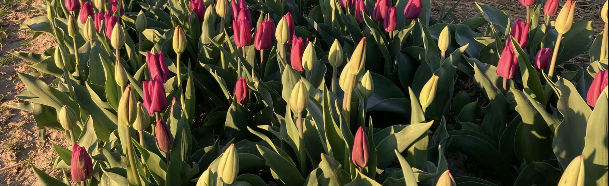
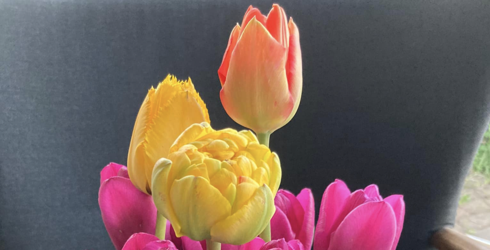

Sådan får du dine tulipaner til at holde længere
Det er på denne tid af året hvor tulipanerne står bedst på vores mark. Vi har derfor samlet nogle råd så du kan få glæde af dine tulipaner længst muligt.
Skær dine tulipaner på den rigtige måde
Skær tulipanerne cirka en centimeter fra bunden af stilken. Når du skal til at skære dine tulipaner er det vigtigt at du
skære dem i en vinkel på cirka 45 grader. På denne måde giver du tulipanerne en større åbning til at suge vand til sig.
Det er også vigtigt at du bruger en skarp kniv, eller en blomstersaks til at skære dine tulipaner til. Tulipanernes
stilke er som regel meget faste, så det skulle ikke være noget problem, hvis du bruger en skarp køkkenkniv eller lignende.
Du skal så vidt muligt undgå at mase bunden eller undgå at bunden bliver flosset når du skære dem. Tulipanerne kan ikke
optage vand ligeså let, hvis stilken er mast eller flosset fra tilskæringen.

Forlæng dine tulipaners levetid
Fyld din vase med 1/3 køligt vand og tilsæt eventuelt konserveringsmiddel til vandet. Dette giver dine tulipaner mere
nærring og beskytter mod bakterier. Det kan også være en fordel at skifte vandet i vasen en gang hver 2 til 3 dag. Det er vigtigt at det er køligt
vand så tulipanerne holder længst muligt.
Du kan også skære dine tulipaner en halv centimeter fra dit tidligere snit, efter et par dage for at få dine tulipaner til at holde endnu
længere. På den måde får tulipanerne en frisk indgang til at suge vand fra igen.

Hvis du følger disse råd, skulle dine tulipaner gerne holde i 7-10 dage.
Vi glæder os til at se dig på marken, og ønsker dig en god tur. Del gerne billeder af dine fine tulipan buketter på vores facebook side.
Vi sælger også tulipanløg, så du kan prøve at plante dine egne tulipaner i din have til efteråret, når nattefrosten begynder
at dukke op igen.